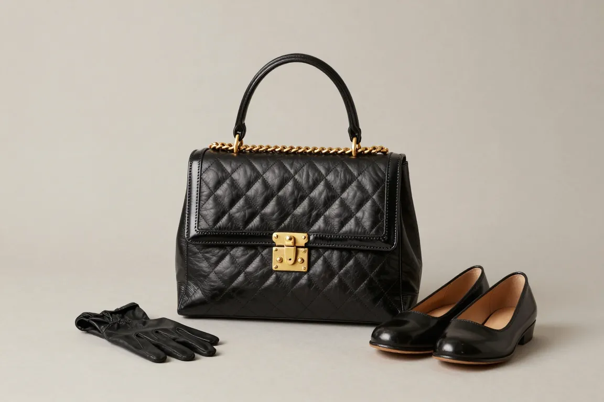

fashion · 1955–1969 · also: 1950s structured handbag, Top-handle and chain-strap bag
The neat, matched handbag of the 1950s and early 1960s. It is a rigid calfskin box with a top handle and a turn-lock, or a quilted flap bag on a chain. The wearer carries it on the arm with gloves and a small hat.

Core thesis
A lady's bag completes her outfit, and it is small, firm and kept in order.
Design principles
Build a firm box on a frame, 20 to 30 cm wide, that stands on its own.
Hold the bag by a short top handle, 8 to 12 cm tall, or on the forearm.
Close the flap with a brass turn-lock or a kiss clasp.
Quilt a soft skin in diamond rows of 3 to 4 cm, and hang it on a chain strap.
Match the bag to the shoes and the gloves.
Line the inside in silk twill, with a pocket for a mirror and a purse.
Make the stitches small and even, 8 to 10 to the cm, by hand.